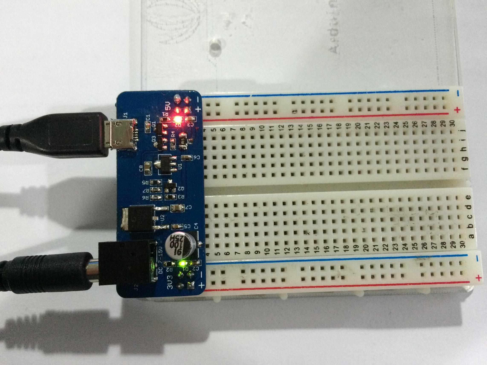

5V/3.3V breadboard power supply designed by SeeedStudio. It can directly takes power from DC wall wart and outputs both 5V and 3.3V regulated voltage.
Compare to other breadboard power supply designs, this one provided micro-USB port, you can use both 5V and 3.3V regulated voltage. The 5V/3.3V breadboard power supply includes micro-USB port and power jack port. This power supply fits the breadboard which is 5.3cm wide like Bread board Clear - 8.2 x 5.3cm,and it can fit the 5.5cm wide breadboard too Basic Bread board - 16.5*5.5 cm,but just a little tight.
| Specification | Conditions | Min | Typ | max | Unit |
|---|---|---|---|---|---|
| Input voltage | 7.0 | 9.0 | 15.0 | V | |
| Output Voltage | Channel 3.3V | 3.267 | 3.3 | 3.333 | V |
| Channel 5V: 10mA≤IOUT≤400mA, 7V≤VIN ≤15V | 4.9000 | 5.0 | 5.100 | V | |
| Output Current | 400 | mA |
